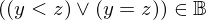
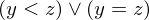
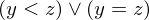

Show the Proof¶
In [1]:
import proveit
# Automation is not needed when only showing a stored proof:
proveit.defaults.automation = False # This will speed things up.
proveit.defaults.inline_pngs = False # Makes files smaller.
%show_proof
Out[1]:
| step type | requirements | statement | ||
|---|---|---|---|---|
| 0 | instantiation | 1, 2 |  ⊢ ⊢  | |
 : :  , ,  : :  | ||||
| 1 | axiom | ⊢  | ||
| proveit.logic.booleans.disjunction.right_in_bool | ||||
| 2 | instantiation | 3, 4, 5 | ⊢  | |
 : :  , ,  :  :  | ||||
| 3 | theorem | ⊢  | ||
| proveit.logic.equality.substitute_truth | ||||
| 4 | theorem | ⊢  | ||
| proveit.logic.booleans.true_is_bool | ||||
| 5 | instantiation | 6, 7, 8 | ⊢ | |
 : , : ,  : : | ||||
| 6 | theorem | ⊢  | ||
| proveit.logic.equality.rhs_via_equality | ||||
| 7 | assumption | ⊢ | ||
| 8 | instantiation | 9 | ⊢  | |
:  , : , :  | ||||
| 9 | axiom | ⊢  | ||
| proveit.numbers.ordering.less_eq_def | ||||